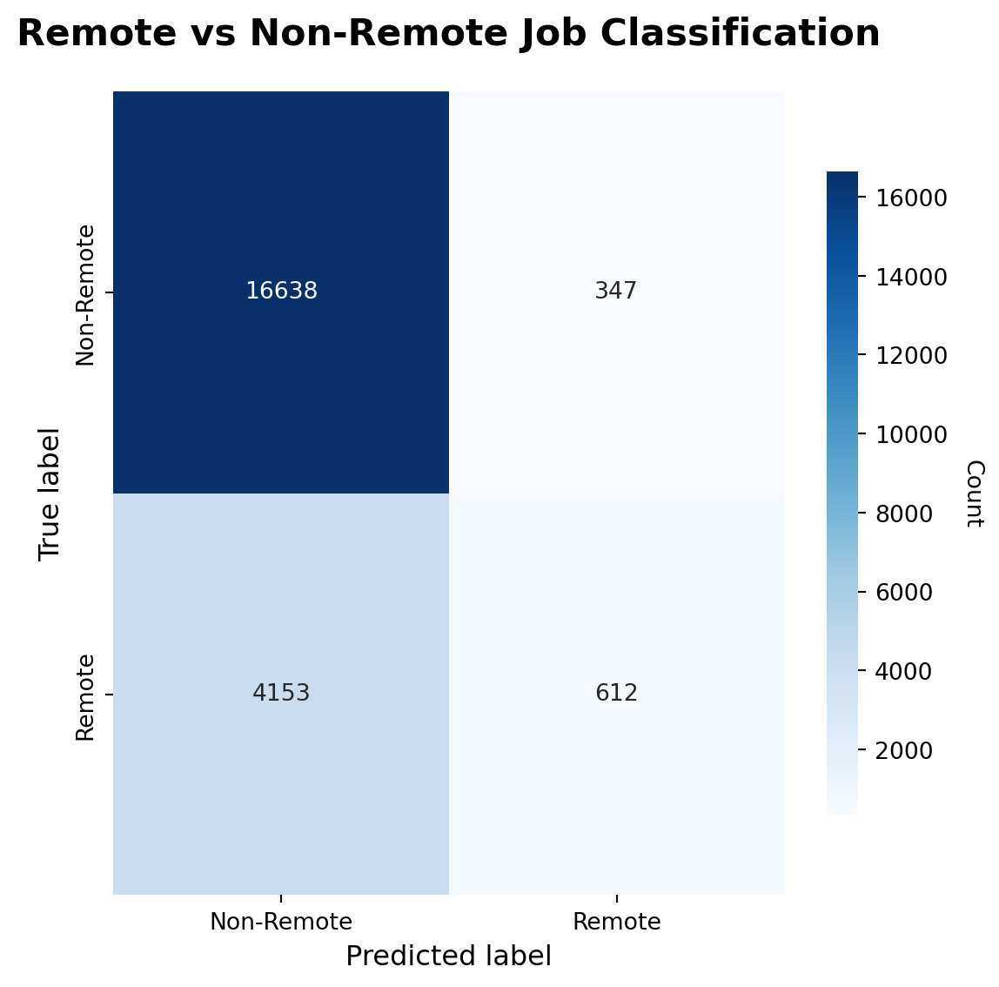

import pandas as pd
import matplotlib.pyplot as plt
import seaborn as sns
from sklearn.model_selection import train_test_split
from sklearn.preprocessing import OneHotEncoder
from sklearn.compose import ColumnTransformer
from sklearn.pipeline import Pipeline
from sklearn.linear_model import LogisticRegression
from sklearn.metrics import (
confusion_matrix,
accuracy_score,
classification_report
)
# 1. Load the ORIGINAL Lightcast dataset
# (we do NOT use the cleaned subset here, because it only contains Remote jobs)
raw_path = "data/lightcast_job_postings.csv"
df_raw = pd.read_csv(raw_path, low_memory=False)
# 2. Clean the REMOTE_TYPE_NAME column
df_raw["REMOTE_TYPE_NAME"] = (
df_raw["REMOTE_TYPE_NAME"]
.astype(str)
.str.strip()
)
print("Raw REMOTE_TYPE_NAME distribution (top 10):")
print(df_raw["REMOTE_TYPE_NAME"].value_counts(dropna=False).head(10))
# 3. Create a binary label: IS_REMOTE (1 = Remote-related, 0 = Non-Remote)
df_raw["IS_REMOTE"] = df_raw["REMOTE_TYPE_NAME"].str.contains(
"remote", case=False, na=False
).astype(int)
print("\nIS_REMOTE value counts:")
print(df_raw["IS_REMOTE"].value_counts())
# If the data still has only one class, stop early to avoid model errors
if df_raw["IS_REMOTE"].nunique() < 2:
raise ValueError(
"The dataset currently contains only one class for IS_REMOTE. "
"Classification is not possible with a single class."
)
# 4. Select features (structured, geography + industry)
feature_cols = ["NAICS_2022_6_NAME", "STATE_NAME"]
for col in feature_cols:
df_raw[col] = df_raw[col].astype(str).str.strip()
X = df_raw[feature_cols]
y = df_raw["IS_REMOTE"] # 0 = Non-Remote, 1 = Remote
# 5. Train/Test split (stratify to keep class balance)
X_train, X_test, y_train, y_test = train_test_split(
X,
y,
test_size=0.3,
random_state=42,
stratify=y
)
# 6. Preprocessing + Logistic Regression pipeline
preprocess = ColumnTransformer(
transformers=[
("cat", OneHotEncoder(handle_unknown="ignore"), feature_cols)
]
)
clf = Pipeline(steps=[
("prep", preprocess),
("logreg", LogisticRegression(max_iter=300))
])
# 7. Fit the model
clf.fit(X_train, y_train)
# 8. Predictions and evaluation metrics
y_pred = clf.predict(X_test)
print(f"\nAccuracy (Remote vs Non-Remote): {accuracy_score(y_test, y_pred):.3f}\n")
print("Classification report:\n")
print(classification_report(
y_test,
y_pred,
target_names=["Non-Remote", "Remote"]
))
# 9. Confusion matrix plot (for the report)
cm = confusion_matrix(y_test, y_pred)
fig, ax = plt.subplots(figsize=(6, 6))
# Heatmap
sns.heatmap(
cm,
annot=True,
fmt="d",
cmap="Blues",
cbar=True,
cbar_kws={"shrink": 0.8},
xticklabels=["Non-Remote", "Remote"],
yticklabels=["Non-Remote", "Remote"],
ax=ax
)
# Set the title and coordinate axes
ax.set_title("Remote vs Non-Remote Job Classification", fontsize=16, weight="bold", pad=20)
ax.set_xlabel("Predicted label", fontsize=12)
ax.set_ylabel("True label", fontsize=12)
# Set the colorbar label
cbar = ax.collections[0].colorbar
cbar.set_label("Count", rotation=270, labelpad=15)
# layout
fig.tight_layout()
plt.savefig("figures/remote_confusion_matrix.png", dpi=300, bbox_inches="tight")
plt.show()Raw REMOTE_TYPE_NAME distribution (top 10):
REMOTE_TYPE_NAME
[None] 56570
Remote 12497
Hybrid Remote 2260
Not Remote 1127
nan 44
Name: count, dtype: int64
IS_REMOTE value counts:
IS_REMOTE
0 56614
1 15884
Name: count, dtype: int64
Accuracy (Remote vs Non-Remote): 0.793
Classification report:
precision recall f1-score support
Non-Remote 0.80 0.98 0.88 16985
Remote 0.64 0.13 0.21 4765
accuracy 0.79 21750
macro avg 0.72 0.55 0.55 21750
weighted avg 0.76 0.79 0.73 21750
